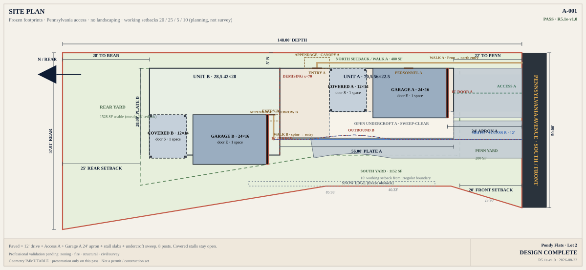
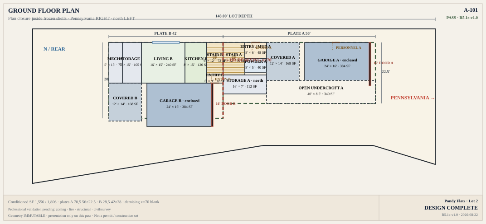
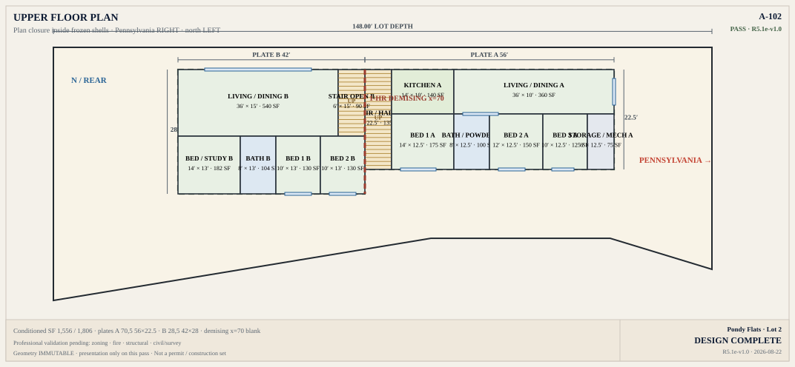
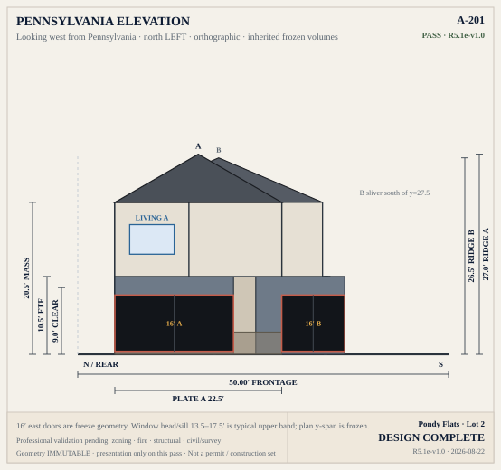
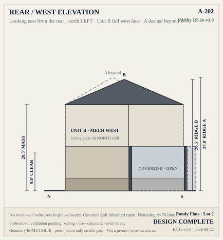
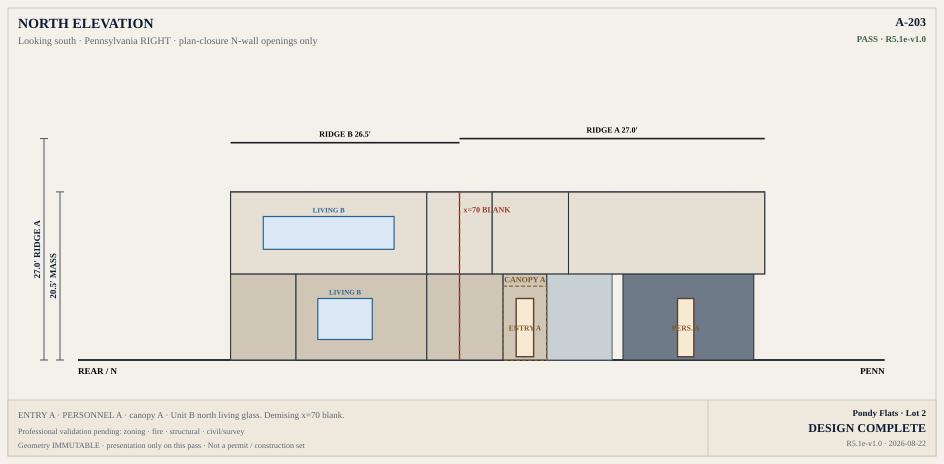
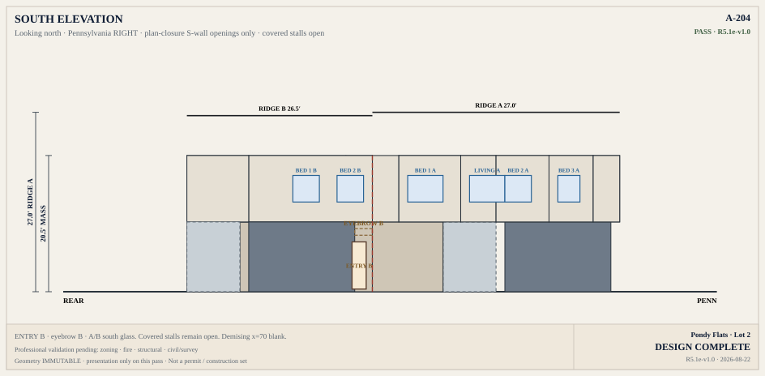
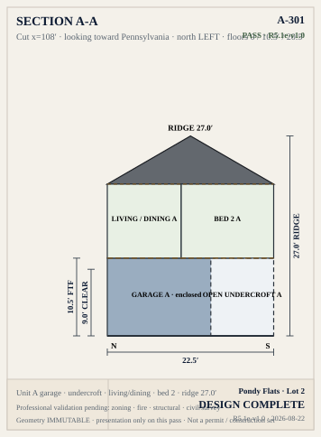
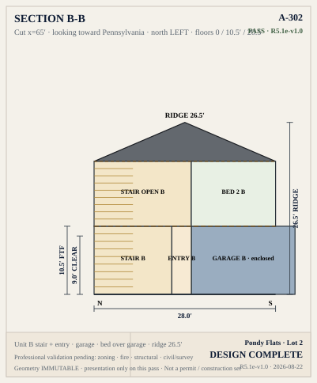

1 · Front of the lot
Pennsylvania is on the right
That is the street, the 50′ frontage, and where cars enter. Home A is the east home, closer to the street. Home B sits farther west, sharing a party wall at x=68.
Pondy Flats · 1907 E Pennsylvania · Design 1 · R5.1e-v1.1 · not a permit set
Complete package · Design 1 · not a permit set
A connected duplex faces Pennsylvania Street. Two enclosed garage stalls and two covered stalls sit in the house plates. This page is the drawing set a client can read without a tour — what the idea is, how to look at the drawings, and what still needs the city.
Four rules cover every sheet. If something looks “sideways,” it is because the lot is drawn as it sits on Pennsylvania — not rotated to make north point up.
That is the street, the 50′ frontage, and where cars enter. Home A is the east home, closer to the street. Home B sits farther west, sharing a party wall at x=68.
Two enclosed stalls live in the plates. Two covered stalls sit beside them, open, on eight posts. A full-size SUV can reach each stall independently from Pennsylvania.
The gold dashed line is the principal setback reading (20′ front, 25′ rear, 5′ / 10′ sides). It is a working assumption until the city confirms it.
Building sizes, ridges, doors, posts, and parking paths do not move. Stone, window muntins, and interior furniture are presentation. A prettier picture that moves a wall is the wrong picture.
Scroll the drawings below, or open a grouped page. Presentation may be edited. Building outlines, parking, and the driveway may not move.
This is the most important drawing. It shows that both homes sit on the surveyed lot, that cars enter only from Pennsylvania, and that the enclosed and covered stalls are independently reachable.

These rooms sit on plates that already work for parking. They are exact to the lock, not a permit takeoff.


Street face first. Heights match the lock: ground 10.5′, mass 20.5′, ridges 27.0′ / 26.5′.






Same camera on both drawings: Pennsylvania is near (bottom), the rear of the lot is deep (top). A prettier picture that has to move a wall is the wrong picture.


These are the questions this package has to answer. “Met” means the lock currently holds. Professional validation (zoning, fire, structure, survey) is still open.